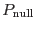
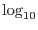

This function may be performed alone by calling the script with entrystage and finalstage=`reliability'.
It is desirable to discard detections for which the probability  is high that the detection arose by a chance fluctuation of the background. It is assumed here that any detection scheme called by eimsim will calculate this probability and store it in the DETEC_PNULL column of the output source list. Generally one would expect that the detection scheme to implement a cutoff in the value of , sources falling above this cutoff being discarded. The purpose of the function is to check that the calculation of works as expected. This is done by comparing the column DETEC_PNULL values to the number of false detections. In fact is plotted as a function of DETEC_PNULL. How does this work? Well, the average number of false detections should be proportional to the probability of detection from background fluctuations - at least for the situation in which the `real' sources are relatively sparse, and thus unable to muddy the waters. A histogram of against should therefore give a straight line of slope 1 on a log-log plot.
The following histogram columns are calculated:
The DETEC_PNULL bins are calculated such that they have equal widths in  space. DPNUL_MID is also the geometric mean of the bin boundaries, not the arithmetic mean.